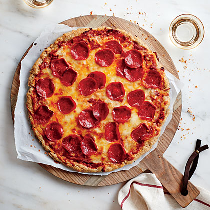

Pepperoni Pizza Recipe

Description
You won't miss the gluten in this crust! Topped with cheesy goodness and turkey pepperoni, this pizza is bound
to be a hit with the whole family.
Ingredients
- warm water
- granulated sugar
- dry yeast
- white rice flour
- sweet white sorghum flour
- tapioca flour
- potato starch
- flaxseed meal
- xantham gum
- salt
- olive oil
- egg whites
- eggs
- marinara sauce
- mozzarella cheese
- turkey pepperoni
- parmesan cheese
Steps
- Combine 1/2 cup water, sugar, and yeast in a small bowl, stirring with a whisk. Let stand 5 minutes or until
yeast mixture is bubbly.
- Weigh or lightly spoon flours, potato starch, and flaxseed meal into dry measuring cups; level with a knife.
Combine flours, potato starch, flaxseed meal, xanthan gum, and salt in a large bowl; beat with a mixer at
medium speed until blended. Add yeast mixture, 1 tablespoon oil, egg whites, and egg; beat at low speed 1
minute or until combined. Increase speed to medium; beat 2 minutes.
- Coat a baking sheet with 1 teaspoon oil. Scrape dough onto pan. Lightly coat hands with oil. Press dough
into a 14-inch circle, coating hands with oil as needed to prevent dough from sticking. Coat top of dough
with any remaining oil. Cover with plastic wrap, and let rise in a warm place (85°), free from drafts, for
30 minutes.
- Preheat oven to 400°.
- Remove plastic wrap, and bake crust at 400° for 17 minutes or until bottom lightly browns. Cool completely.
Increase oven temperature to 425°.
- Spread marinara over crust, leaving a 1/2-inch border; top with mozzarella cheese, pepperoni, and Parmesan
cheese. Bake at 425° for 16 minutes or until crust is golden and cheese melts.
Back To Homepage